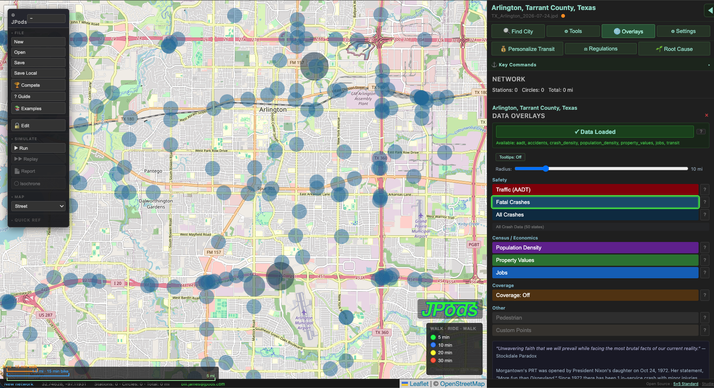
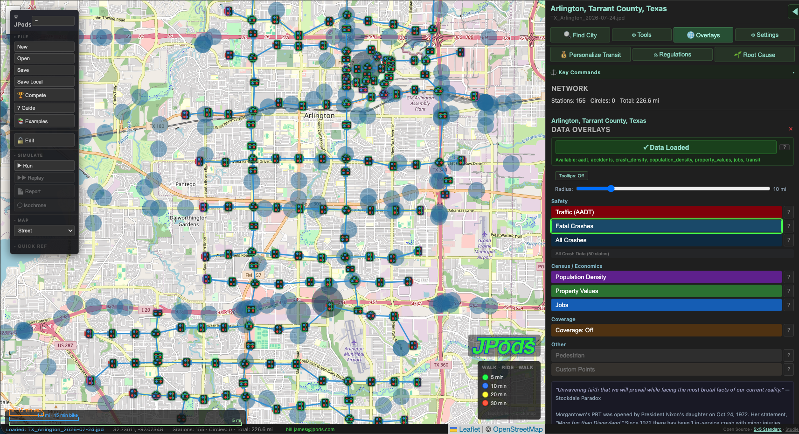
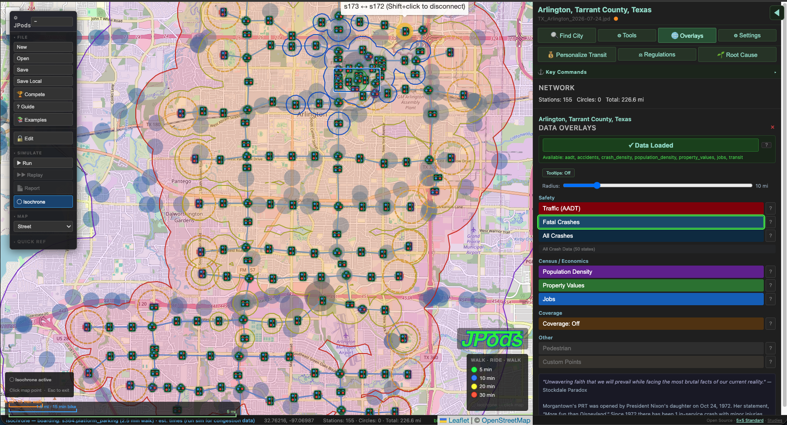

Tarrant County — 155 stations, 226.6 miles of guideways
Where people are being killed and injured on roads in Arlington, Tarrant County. Data from NHTSA FARS via MeshMobility.com.

A JPods network designed to cut roadkills 60-80%. Crash corridors become guideway corridors.

Walk-ride-walk travel times from the city center on a PRT network. Without a car, without crashes, available 24x7, powered by sunshine. Green = 5 min, Blue = 10 min, Yellow = 20 min, Red = 30 min.
